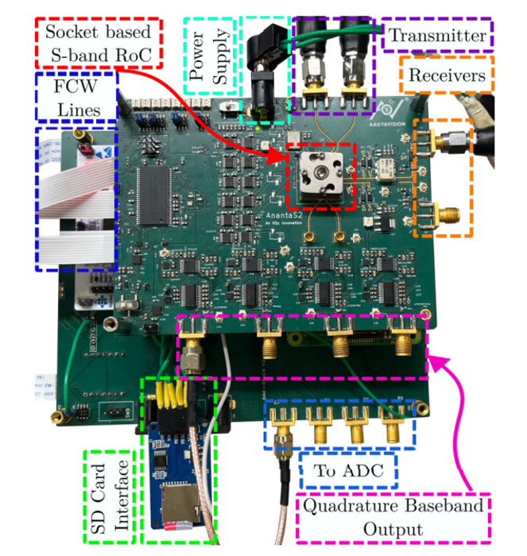
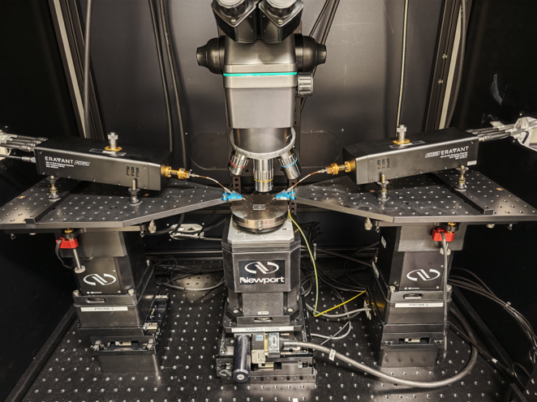

Akhilesh Khot
Email id: akhileshskhot [AT] gmail dot com
Akhilesh Khot holds a Master's degree in Electrical Engineering (Microelectronics) from Delft University of Technology (TU Delft), the Netherlands, and a Bachelor's degree in Electronics and Telecommunication Engineering from Savitribai Phule Pune University (SPPU), India. His research interests include RF electronics and the design and implementation of readout and control electronics for superconducting qubits, and he recently completed his Master's thesis in this area. He enjoys building electronics designs from the ground up, from circuit concept to working hardware. Outside the lab, he likes playing chess and cricket.
Youtube Github LinkedIn CV

education
Education
Master of Science, Microelectronics (Electrical Engineering)
Delft University of Technology (TU Delft), the Netherlands
Thesis grade: 8.5
Bachelor of Engineering, Electronics and Telecommunication
Savitribai Phule Pune University (SPPU), India
Presentation
Research Presentation
On-Chip Through-the-Wall RADAR
Analog and RF Systems Lab, IISc BengaluruBuilt the mixed-signal PCB for a chip-scale through-the-wall RADAR – smaller than a grain of rice – bringing the RF front-end, analog baseband, and STM32-based digital control together on one board: PA/LNA matching, attenuators, and bias circuitry on the RF side; IF amplification on the analog side; and GPIO-driven chirp generation with DMA-based acquisition on the digital side. Also contributed to a hybrid FMCW–CW waveform that lets the radar demarcate chirp boundaries and stay phase-coherent without an external clock, published in:
- E. Easha, A. P. Khot and G. Banerjee, “Hybrid Waveform Based Chirp Demarcation in FMCW Radar Systems,” 2024 IEEE Asia-Pacific Microwave Conference (APMC), Bali, Indonesia, 2024, pp. 934-936, doi: 10.1109/APMC60911.2024.10867781 [IEEE Xplore]
- E. Easha and G. Banerjee, “Hybrid Waveform-Based Efficient Chirp Demarcation and Clock-Free Synchronization in FMCW Radar Systems,” IEEE Transactions on Microwave Theory and Techniques, vol. 73, no. 12, pp. 9761-9772, Dec. 2025, doi: 10.1109/TMTT.2025.3605228 [IEEE Xplore]

Traceable On-Wafer Sub-Terahertz Characterization
VSL – Dutch National Metrology InstituteModelled and validated an R-matrix probe-offset error correction for on-wafer S-parameter measurements up to 330 GHz. Simulated calibration structures in ADS Momentum and CST, verified the correction against on-wafer VNA measurements, and extended it to an electro-optic modulator device. Also extracted substrate permittivity and loss tangent to support traceable S-parameter calibration across three frequency bands up to 110 GHz. [link]

Project
Projects
-
Post Undergrad Projects (at Indian Institute of Science, Bengaluru, India )
- Range-Doppler Estimation for Gait-Detection with FMCW Radars in Practical Scenarios (Analog and RF Systems Lab )
- Insulin pump for Type-1 diabetes patients (National Winners) (UTSAAH Lab).
-
Undergrad Projects
- Single channel microphone localization
- A Three-Bit Threshold Inverter Quantization Based CMOS Flash ADC
- Self Balancing Robot
- Line following robot on complex paths (Code available on Github)
- Solar micro-inverter
-
Hobby Projects
Link >
- Control of a light bulb through sound.
- Line following robot using Arduino.
- Fan Controlled Using ESP32 (WiFi): Home Automation.
- Brightness control using IR sensor
Codes<>
Codes
Codes available on Github (all linked below)
- Dual channel ADC operation in simultaneous mode in STM32
- A Three-Bit Threshold Inverter Quantization Based CMOS Flash ADC
- 2D Fast fourier Transform in STM32
- Single channel microphone localization
- Single channel ADC operation in STM32
- Data transfer between MATLAB and STM32 through UART communication
- 1D-FFT-Implementation-in-STM32
- Line following robot on complex paths (Simulations done in CoppeliaSim)